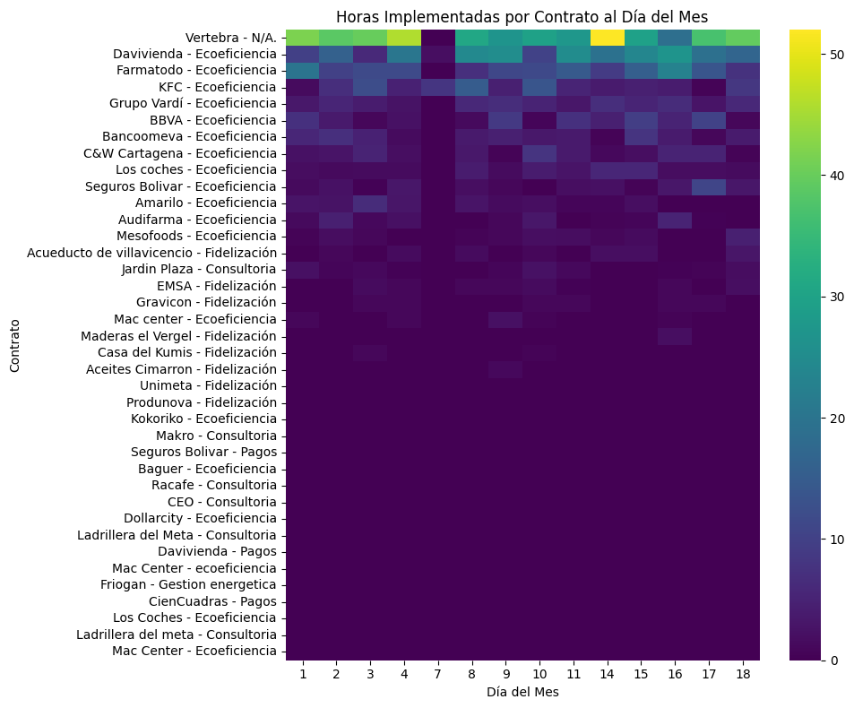
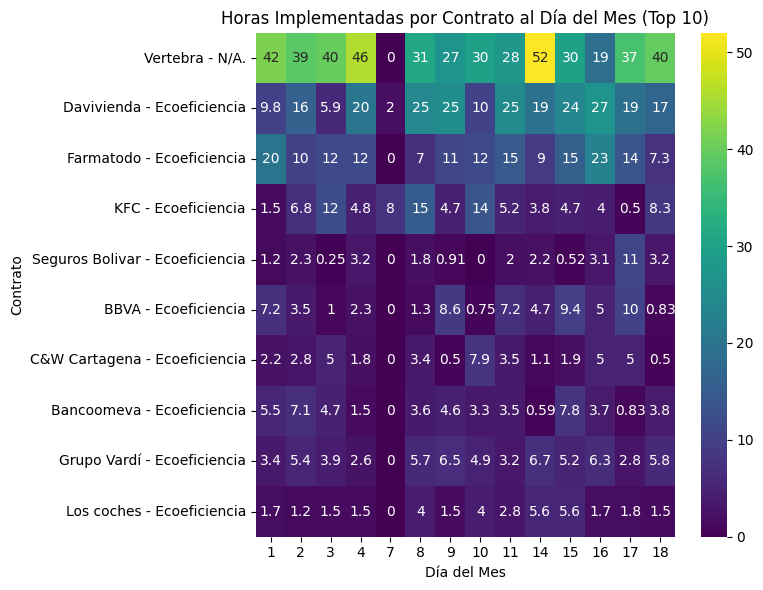
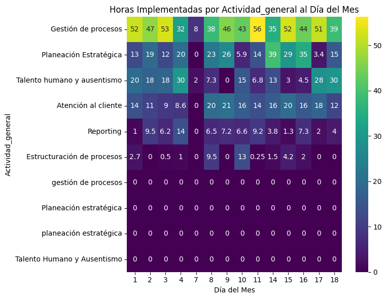
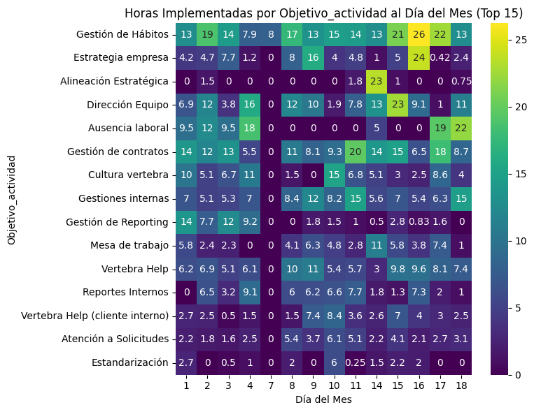
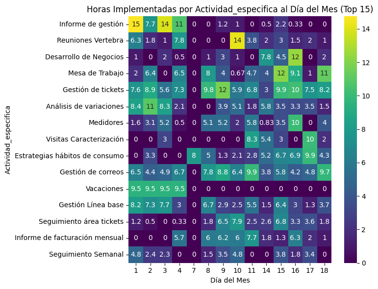

Rendimientos Ecoeficiencia#
23 de agosto del 2023
Análisis descriptivo#
Comparacion ciclos#
Se muestra el total de horas consumidas historico.
No artists with labels found to put in legend. Note that artists whose label start with an underscore are ignored when legend() is called with no argument.
Se muestra el total histórico de colaboradores con registro de actividades.
No artists with labels found to put in legend. Note that artists whose label start with an underscore are ignored when legend() is called with no argument.
Vertical#
Total horas por vertical
| Vertical | Hr_Implementadas | Porcentaje | Porcentaje_Acumulado | |
|---|---|---|---|---|
| 0 | GHC | 866.0 | 63.86 | 63.86 |
| 2 | VPM | 370.0 | 27.29 | 91.15 |
| 1 | Spine | 120.0 | 8.85 | 100.00 |
No artists with labels found to put in legend. Note that artists whose label start with an underscore are ignored when legend() is called with no argument.
Contratos#
Total HH por contrato
| Contrato | Hr_Implementadas | Porcentaje | Porcentaje_Acumulado | |
|---|---|---|---|---|
| 37 | Vertebra - N/A. | 458.0 | 33.85 | 33.85 |
| 11 | Davivienda - Ecoeficiencia | 245.0 | 18.11 | 51.96 |
| 15 | Farmatodo - Ecoeficiencia | 166.0 | 12.27 | 64.23 |
| 20 | KFC - Ecoeficiencia | 93.0 | 6.87 | 71.10 |
| 18 | Grupo Vardí - Ecoeficiencia | 63.0 | 4.66 | 75.76 |
| 4 | BBVA - Ecoeficiencia | 62.0 | 4.58 | 80.34 |
| 6 | Bancoomeva - Ecoeficiencia | 51.0 | 3.77 | 84.11 |
| 7 | C&W Cartagena - Ecoeficiencia | 41.0 | 3.03 | 87.14 |
| 25 | Los coches - Ecoeficiencia | 34.0 | 2.51 | 89.65 |
| 34 | Seguros Bolivar - Ecoeficiencia | 31.0 | 2.29 | 91.94 |
| 2 | Amarilo - Ecoeficiencia | 24.0 | 1.77 | 93.71 |
| 3 | Audifarma - Ecoeficiencia | 20.0 | 1.48 | 95.19 |
| 31 | Mesofoods - Ecoeficiencia | 15.0 | 1.11 | 96.30 |
| 1 | Acueducto de villavicencio - Fidelización | 12.0 | 0.89 | 97.19 |
| 19 | Jardin Plaza - Consultoria | 11.0 | 0.81 | 98.00 |
| 14 | EMSA - Fidelización | 9.0 | 0.67 | 98.67 |
| 17 | Gravicon - Fidelización | 6.0 | 0.44 | 99.11 |
| 28 | Mac center - Ecoeficiencia | 5.0 | 0.37 | 99.48 |
| 29 | Maderas el Vergel - Fidelización | 3.0 | 0.22 | 99.70 |
| 9 | Casa del Kumis - Fidelización | 2.0 | 0.15 | 99.85 |
| 36 | Unimeta - Fidelización | 1.0 | 0.07 | 99.92 |
| 0 | Aceites Cimarron - Fidelización | 1.0 | 0.07 | 99.99 |
No artists with labels found to put in legend. Note that artists whose label start with an underscore are ignored when legend() is called with no argument.
Horas por contrato por día


Actividad general#
| Actividad_general | Hr_Implementadas | Porcentaje | Porcentaje_Acumulado | |
|---|---|---|---|---|
| 2 | Gestión de procesos | 596.0 | 43.95 | 43.95 |
| 3 | Planeación Estratégica | 256.0 | 18.88 | 62.83 |
| 0 | Atención al cliente | 195.0 | 14.38 | 77.21 |
| 7 | Talento humano y ausentismo | 195.0 | 14.38 | 91.59 |
| 5 | Reporting | 79.0 | 5.83 | 97.42 |
| 1 | Estructuración de procesos | 35.0 | 2.58 | 100.00 |
No artists with labels found to put in legend. Note that artists whose label start with an underscore are ignored when legend() is called with no argument.

Objetivo de la actividad#
| Objetivo_actividad | Hr_Implementadas | Porcentaje | Porcentaje_Acumulado | |
|---|---|---|---|---|
| 19 | Gestión de Hábitos | 217.0 | 16.05 | 16.05 |
| 23 | Gestión de contratos | 155.0 | 11.46 | 27.51 |
| 9 | Dirección Equipo | 128.0 | 9.47 | 36.98 |
| 13 | Gestiones internas | 107.0 | 7.91 | 44.89 |
| 4 | Ausencia laboral | 96.0 | 7.10 | 51.99 |
| 43 | Vertebra Help | 94.0 | 6.95 | 58.94 |
| 12 | Estrategia empresa | 83.0 | 6.14 | 65.08 |
| 7 | Cultura vertebra | 79.0 | 5.84 | 70.92 |
| 34 | Reportes Internos | 59.0 | 4.36 | 75.28 |
| 32 | Mesa de trabajo | 58.0 | 4.29 | 79.57 |
| 21 | Gestión de Reporting | 53.0 | 3.92 | 83.49 |
| 44 | Vertebra Help (cliente interno) | 47.0 | 3.48 | 86.97 |
| 2 | Atención a Solicitudes | 43.0 | 3.18 | 90.15 |
| 0 | Alineación Estratégica | 28.0 | 2.07 | 92.22 |
| 11 | Estandarización | 18.0 | 1.33 | 93.55 |
| 6 | Coordinación Áreas | 16.0 | 1.18 | 94.73 |
| 33 | Reportes Ecoeficiencia | 16.0 | 1.18 | 95.91 |
| 8 | Desvinculación | 14.0 | 1.04 | 96.95 |
| 29 | Instructivos | 13.0 | 0.96 | 97.91 |
| 28 | Gestión planeación | 11.0 | 0.81 | 98.72 |
| 40 | Sistema de Gestión | 5.0 | 0.37 | 99.09 |
| 37 | Reportes Soluciones Técnicas | 3.0 | 0.22 | 99.31 |
| 18 | Gestión Soluciones Técnicas | 2.0 | 0.15 | 99.46 |
| 42 | Tableros BI | 2.0 | 0.15 | 99.61 |
| 5 | Capacidad | 2.0 | 0.15 | 99.76 |
| 15 | Gestión Capacitación y desarrollo | 2.0 | 0.15 | 99.91 |
| 27 | Gestión mercados y tarifas | 1.0 | 0.07 | 99.98 |
No artists with labels found to put in legend. Note that artists whose label start with an underscore are ignored when legend() is called with no argument.

Actividad especifica#
| Actividad_especifica | Hr_Implementadas | Porcentaje | Porcentaje_Acumulado | |
|---|---|---|---|---|
| 94 | Gestión de tickets | 103.0 | 7.61 | 7.61 |
| 92 | Gestión de correos | 84.0 | 6.21 | 13.82 |
| 129 | Mesa de Trabajo | 70.0 | 5.17 | 18.99 |
| 90 | Gestión Línea base | 59.0 | 4.36 | 23.35 |
| 7 | Análisis de variaciones | 58.0 | 4.29 | 27.64 |
| ... | ... | ... | ... | ... |
| 171 | Seguimientos Auditoria & Reporting | 1.0 | 0.07 | 99.70 |
| 9 | Archivo de trabajo | 1.0 | 0.07 | 99.77 |
| 29 | Casos especiales | 1.0 | 0.07 | 99.84 |
| 13 | Auditoria de Facturación | 1.0 | 0.07 | 99.91 |
| 74 | Ejecución | 1.0 | 0.07 | 99.98 |
89 rows × 4 columns
No artists with labels found to put in legend. Note that artists whose label start with an underscore are ignored when legend() is called with no argument.

Relación entre variables#
En este apartado se analiza como interactuan los tipos de actividad y adicional los roles con las actividades especificas.
Relacion actividades#
Se muestra la relacion entre Actividad_general, Objetivo_actividad y Actividad_especifica, en este caso solo para el top 15 de actividades especificas.
Warning: When cdn_resources is 'local' jupyter notebook has issues displaying graphics on chrome/safari. Use cdn_resources='in_line' or cdn_resources='remote' if you have issues viewing graphics in a notebook.
Relación por proceso#
Aqui se muestra como se relacionan los procesos con las actividades y con los contratos.